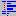

| Précédent: Actions Standard | Edition | Suivant: Mode Refrappe |
Le retrait du texte est une opération courante lors de l'édition de code source, et Scintilla dans Notepad++ le supporte complètement. L'Indentation est l'ajout d'espace supplémentaire au début d'une ligne pour séparer des blocs de texte, afin de monter une hiérarchie entre des bloc de lignes.
Normalement, lors de l'édition, un appui sur la touche de tabulation va insérer un caractère de tabulation à l'emplacement actuel. Toutefois, si du texte est sélectionné, en appuyant sur la touche de tabulation (par défaut), c'est l'indentation qui est activée, ajoutant de l'espace au début de chaque ligne du texte sélectionné, ce qui est plus efficace que de répéter l'opérations ligne à ligne. Appuyez sur Maj + TAB diminue le retrait. Ces commandes sont également disponibles via .
L'Indentation se fait par niveau, chaque niveau ajoutant une quantité prédéfinie d'espaces (ce paramétrage peut être configuré au niveau d'une langue : voir Préférences ). Il y a aussi une option pour insérer un caractère de tabulation ou (plusieurs) espaces (pour cela, aussi voir Préférences ).
« Scintilla » peut afficher une ligne verticale pour chaque niveau; l'activation se fait en sélectionnant ou en appuyant sur . Cette directive constitue un repère visuel pour suivre le niveau d'indentation des lignes du groupement courant. Pour modifier la couleur utilisée, voir Configurateur de coloration syntaxique (à noter que si le symbole sous le curseur est une accolade, le guide prend la couleur du caractère en évidence).